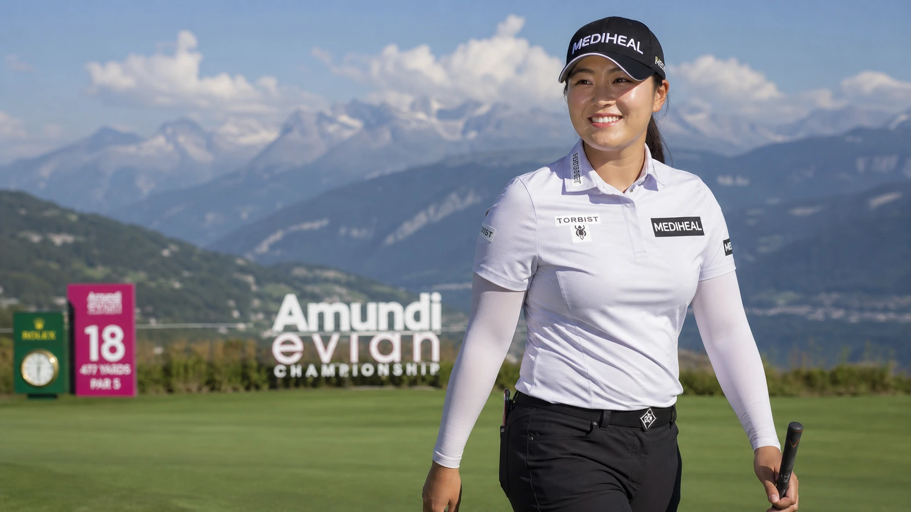

Haeran Ryu shot an 11-under 60 in Round 3 of the 2026 Amundi Evian Championship — the lowest single round ever recorded at any major championship in the history of golf. Not just the LPGA. Any major, across men’s, women’s, and senior tours. Nine birdies, one eagle, not a dropped shot across a par-71 layout. Her 54-hole total of 194 is a new LPGA major scoring record. She leads by three at 19-under going into Sunday. She had no idea she was making history until she counted her birdies on the 18th green.

The Number You Have to Read Twice
Now and then golf produces a scorecard that requires a double-take. A 60 at a major is one of them. Not a regular Tour event on a benign parkland layout with soft greens and generous fairways. A major championship. The Amundi Evian Championship, with its mountain backdrop, severe slopes, and the specific psychological weight that only major golf can generate.
Haeran Ryu reached the 18th green on Saturday, added up nine birdies and an eagle in her head, and arrived at a number she had not been tracking. Sixty. Eleven under par. Lower than anything Tiger Woods, Rory McIlroy, Jack Nicklaus, or any other player — male or female — has ever posted at a major championship. She was still doing the arithmetic when her caddie, who had known for several holes, quietly confirmed what the card already said.
"She wasn’t hunting a record. She was just making birdies until the card told her what she’d done."
The Record in Full: How the Numbers Stack Up
Context is everything when a number this large lands. The previous all-time major championship round record was 10-under par, a mark set three times — all at the Evian — by Leona Maguire, Jeung-eun Lee6, and Hyo Joo Kim. Ryu has now beaten it by one.
The men’s major record stands at 62, first established by Branden Grace at the 2017 Open Championship at Royal Birkdale, and since matched five times by other elite male professionals. Ryu’s 60 clears that benchmark by two full shots. She is, as of Saturday evening in Evian-les-Bains, the holder of the lowest single round in major championship history across every tour and every era.
| Score | Player | Major / Tour | Year |
|---|---|---|---|
| 60 (−11) | Haeran Ryu | Amundi Evian Championship | 2026 |
| 61 (−10) | Maguire / Lee6 / Kim | Amundi Evian Championship | Various |
| 62 (−8/−9) | Branden Grace + 5 others | Men’s Majors (various) | 2017–2025 |
Two records broken in a single round on a single Saturday. The 54-hole aggregate of 194 also sets a new LPGA major scoring record. The combination is almost impossible to process: Ryu has not merely nudged a benchmark. She has redrawn it by a margin that will likely stand for a very long time.
The Eagle That Started the Stampede
Saturday’s round did not begin with a statement of intent. It gathered momentum, then detonated. Ryu turned in 29 on the front nine, a front nine that included a moment of pure, unrepeatable golf on the par-4 sixth. From 155 yards, with a seven-iron, she chose a conservative line. The green at six is treacherous to approach aggressively, and her intention was simply to two-putt for par. She was already walking toward the green when the ball disappeared into the hole.
An eagle from 155 yards on a par-4, played not as an attack but as a safety shot. That is the kind of day Haeran Ryu was having. The eagle took her to nine-under for the tournament after six holes and set the tone for everything that followed. She then birdied four of her final five holes on the back, the throttle never lifted, and signed for a 29 on the inward half as well.
The 59 That Almost Was — and the Caddie Who Knew
The 18th hole at the Evian Resort Golf Club is a par-5. Ryu reached it needing a birdie for a 60, an eagle for a 59. Only one other player in LPGA history has shot a 59 in any Tour event: Annika Sorenstam, in 2001 — a round that remains one of the most celebrated in the sport’s history.
Ryu rolled a 30-foot eagle putt up the slope. The ball tracked the hole, held its line, and stopped inches short. Birdie. A 60.
The detail that makes this story resonate beyond the scorecard is what happened on the green afterwards. Ryu does not track her score during rounds. It is a conscious decision — a deliberate act of mental discipline designed to keep her focused on the present shot rather than the accumulating number. So when the putt for 59 burned the edge, she had no idea what she had narrowly missed. She stood on the green counting her birdies, working backwards, when the number finally registered. Her caddie, standing alongside her, had known for several holes. His expression in the footage — impassive, controlled, quietly carrying the weight of a historic number — says everything about the trust and discipline between the pair.
The Evian Championship Leaderboard After Round 3
The round built an almost insurmountable buffer. Ryu leads by three strokes at 19-under par going into the final round. The nearest challenger is Japan’s Aki Iwai, who followed up a strong week with a composed 65 on Saturday. Iwai played alongside Ryu and, from the best available vantage point, offered a crisp assessment: she is on fire. There is not a more precise observation available from inside the ropes.
Beyond Iwai, the gap becomes a chasm. Brooke Henderson and Mao Saigo share third place, seven strokes adrift. Henderson’s Saturday deserves a separate mention. She made two eagles on the day — dramatic, crowd-pleasing, and the kind of scoring burst that wins most rounds in any week on Tour. She still finished seven behind. That is the measure of what Ryu produced: the best day Henderson could conjure left her seven shots back. The scale of the 60 is contained entirely in that number.
Lottie Woad’s Difficult Moving Day
The pre-round story had included Lottie Woad, the young Englishwoman who started Saturday as the overnight second-round leader. She posted a 72, a day on which the birdies were difficult to come by and the pars hard to save under leaderboard pressure. Woad now sits nine strokes off the pace. The leaderboard, compressed and full of tension entering Moving Day, has been stretched almost beyond competitive relevance by one player’s historic afternoon.
Can Ryu Win Back-to-Back Majors?
The question is almost too simple to ask at this point. A three-shot lead, the form of her life, and a major already banked from the KPMG Women’s PGA Championship two weeks ago. If Ryu closes on Sunday, she will be a two-time major champion inside three weeks. That would match Nelly Korda — who herself chased the career Grand Slam here in France before missing the cut — as the only double major winner of the 2026 season.
There is one honest caveat, and the course provides it. Of the three players who previously shot 61 at the Evian, only one went on to lift the trophy. A low Round 3 does not automatically convert into a Sunday win. Ryu acknowledged this directly in her post-round interviews: there is work still to do. She has not won anything yet.
But a player who just rewrote the historical record books, sitting on a three-shot cushion, with a major championship already in her pocket this summer, is about as compelling a favourite as women’s golf offers right now.
The Raw Read
Golf produces numbers that demand re-reading. A 60 at a major is one of the rarest combinations the sport can generate — a collision of talent, conditions, nerve, and execution so complete that the result sits outside normal competitive reference points. Lower than anything the men’s game has managed at its highest level. Lower than any woman before her. Shot by someone too locked in a state of flow to realise what she was doing, right up until the moment she stood on the final green and did the arithmetic.
The bigger picture is what should concern Ryu’s rivals most. Two weeks ago she came from 10 strokes back to win the KPMG. Now she is rewriting the record book at the very next major. Sunday still has to be played, and this course has humbled low scorers before. But if Ryu closes it out, this stops being a breakout. It becomes a player separating herself into a tier of her own — and right now, she looks like the best player in women’s golf.
Frequently Asked Questions
What did Haeran Ryu shoot at the 2026 Evian Championship?
An 11-under 60 in the third round — nine birdies and one eagle, with no bogeys across a par-71 layout. It is the lowest single round ever recorded at any major championship in the history of golf.
Is Haeran Ryu’s 60 really an all-time major record?
Yes, unambiguously. The previous major record was 10-under, set three times at the Evian. The men’s all-time major record is 62, set by Branden Grace at the 2017 Open Championship. Ryu’s 60 beats it by two.
How did Ryu nearly shoot 59?
She faced a 30-foot eagle putt on the par-5 18th that would have given her a 59 — only the second in LPGA history after Annika Sorenstam in 2001. The ball tracked to the hole and stopped inches short. She tapped in for birdie and the 60.
Did Ryu know she was making history?
No. She deliberately does not track her score during rounds. She only realised while counting her birdies on the 18th green. Her caddie had known for several holes and said nothing.
Who leads the Evian Championship 2026 going into the final round?
Haeran Ryu, at 19-under par, three shots clear of Aki Iwai. Brooke Henderson and Mao Saigo share third, seven back.
Could Haeran Ryu win back-to-back majors?
She is in a commanding position to do so. She won the KPMG Women’s PGA Championship two weeks ago. A victory at the Evian on Sunday would make her a two-time major champion in three weeks.